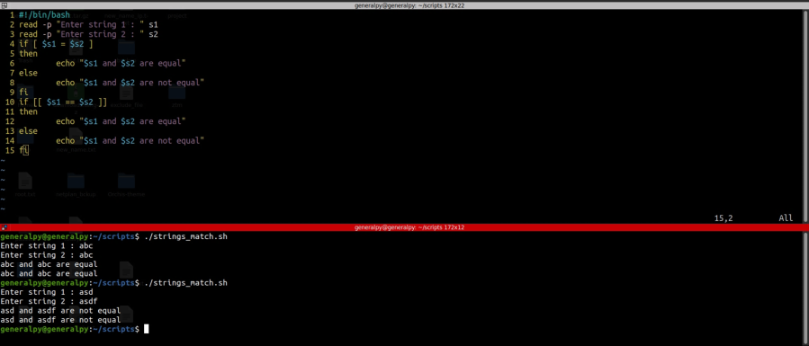
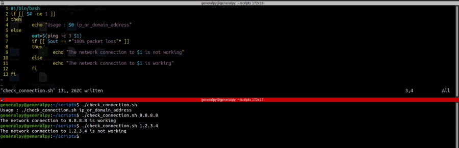

Comparing strings in if statments
Comparing strings is a very important function for any programming language.
Bash also provides basic methods to compare strings.
To check equality of 2 strings, use = sign if using [] else use == if using [[]]. Two strings are equal if they have same length and their each character is same.

There should be a space between operands and operator.(= and s1 and s2).
To check for non equality use != operator.
Substrings can be checked by using asterisks(*). Asterisks stands for match everything.

-n testing condition returns true if string has non zero length and -z returns true if string has 0 length.

Above script uses multiple concepts to check if connection to an address is working.